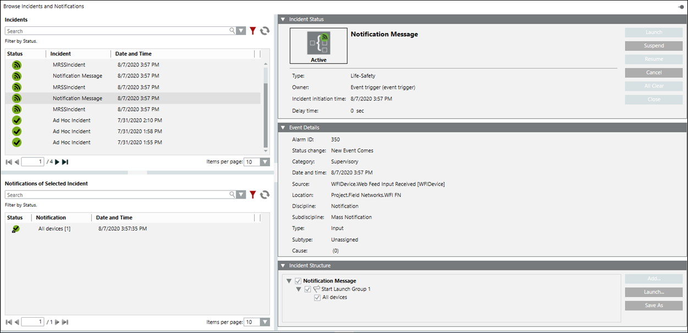
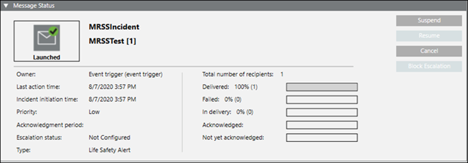

Checking the Notification Incidents
Scenario: You want to check the initiated Notification Incident Template.
- In System Browser, select Notification.
- In the Browse Incidents tab, do the following:
- To view the incident details, select an Incident under the Incident section.
- The incident status, event details and incident structure are displayed in their respective expanders.

- To view the message status, select a Notification under the Notification of Selected Incident section.
- The Message Status is displayed by default in the Message Status expender.
